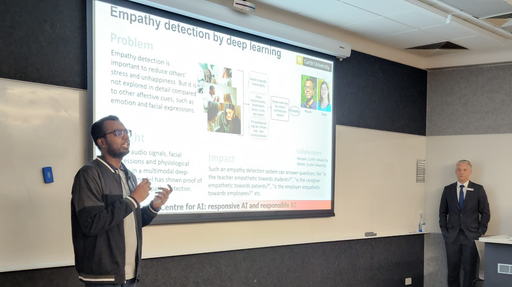
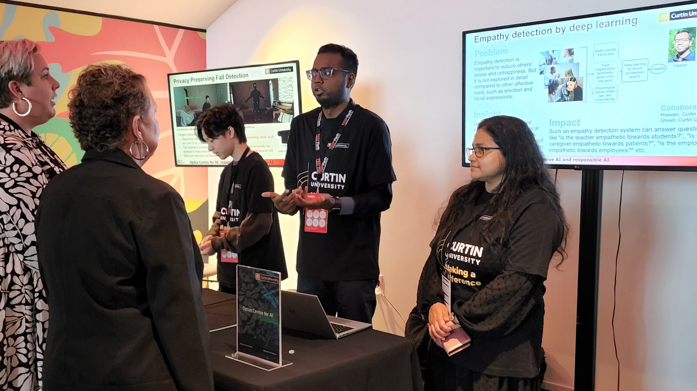
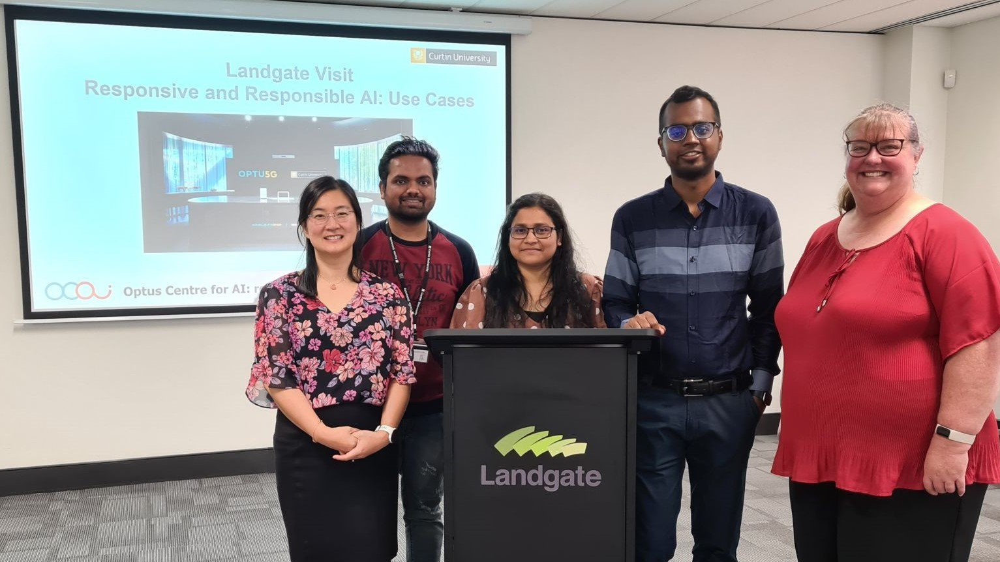

Program committee member, 1st International Workshop on REsponsible Affective CompuTing (REACT 2023) at ACM MM 2023, Ottawa, Canada
Shadow program committee member, 19th International Conference of Technical Committee 13 (Human- Computer Interaction) (INTERACT 2023), York, UK and Online
Reviewer, 22nd IEEE International Conference on Machine Learning and Applications (ICMLA 2023), Florida, USA
Program committee member, 29th International Conference on Neural Information Processing 2022 (ICONIP 2022), New Delhi, India
Program committee member, 21st IEEE International Conference on Machine Learning and Applications (ICMLA 2022), Nassau, The Bahamas
External reviewer, 5th International Conference on Electrical Engineering and Information & Communication Technology 2021 (ICEEICT 2021), Dhaka, Bangladesh
BRACU Committees
Chair, Extra & Co-Curricular Activities Subcommittee, Department of Electrical and Electronic Engineering [2021 – Dec. 2022]
Member Secretary, Final Year Design Project Coordination Subcommittee, Department of Electrical and Electronic Engineering [2020 – Dec. 2022]
Member, Committee for Undergraduate Studies (CUGS), Department of Electrical and Electronic Engineering [Oct. 2020 – Dec. 2022]
Talks
Conferences
2022
Presented a paper at 29th IEEE International Conference on Image Processing (IEEE ICIP), Oct. 16-19, 2022, Online. [Conference weblink]
Presented a paper at International Conference on Innovations in Science, Engineering and Technology 2022 (ICISET 2022), Feb. 26-17, 2022, Online. [Conference weblink] [Slides] [Video]
Presented a paper at ICAART 2022 - 14th International Conference on Agents and Artificial Intelligence, Feb. 3-5, 2022, Online. [Conference weblink] [Slides] [Video]
2020
Presented a paper at 2020 IEEE 8th R10 Humanitarian Technology Conference (R10-HTC), Dec. 1-3, 2020, Online. [Conference weblink] [Slides] [Video]
Presented a paper at 2020 IEEE Region 10 Symposium (TENSYMP), Jun. 5-7, 2020, Online. [Conference weblink] [Slides] [Video]
2019
Presented a paper at 2019 1st International Conference on Advances in Science, Engineering and Robotics Technology (ICASERT), May 3-5, 2019, Dhaka, Bangladesh. [Conference weblink] [Slides]
Seminars/Workshops
2019
Speaker on Workshop on MATLAB and SIMULINK, Organized by EEE Makers Hub, Department of Electrical and Electronic Engineering, Khulna University of Engineering & Technology (KUET), Bangladesh. [Slides]
Other engagements

Talked about my PhD research at the "ASEAN High Schools' Counsellor" seminar at Curtin University on 26th April 2023.

Talked about my PhD research at the "Ask an AI Expert" activation space at TEDxPerth on 1st April 2023.

Talked about my PhD research at the "Infinite Horizons Innovation Event" at Landgate, Midland, WA on 31st March 2023.